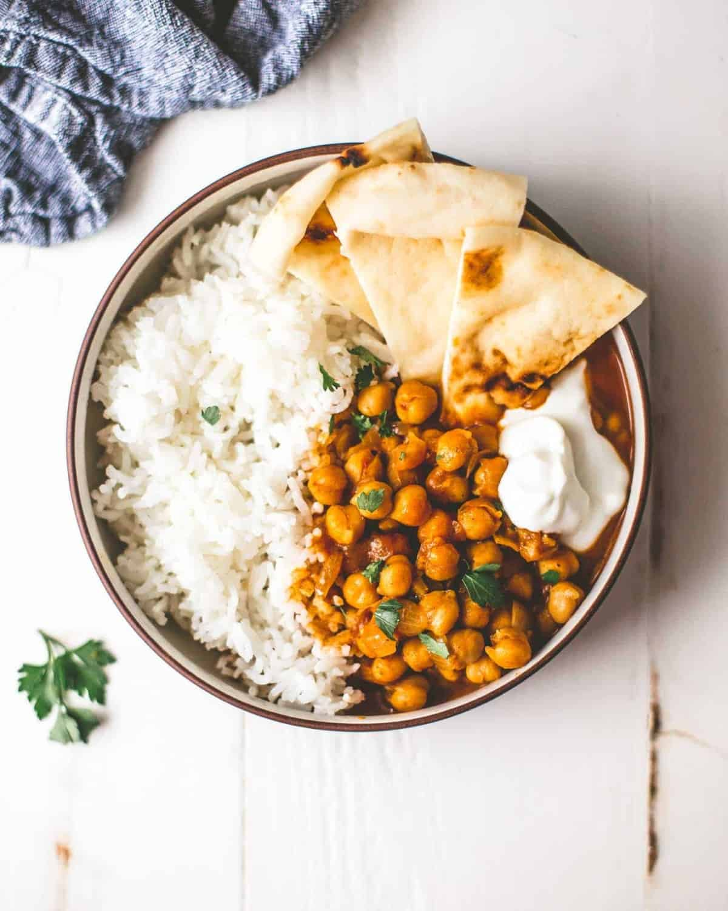

Instant Pot Chickpea Curry with Basmati Rice

Description
This tasty vegetarian meal is easy to prepare in an instant pot. And you can fix rice with it at the same time.
Ingredients
- 2 tablespoons butter (if you have clarified butter / ghee use it here, but regular butter is fine)
- 1 medium onion, chopped
- 2 cloves garlic, chopped
- 2 teaspoons fresh ginger, finely chopped
- 4 tablespoons tomato paste
- 2 teaspoons mild yellow curry powder
- 2 teaspoons garam masala
- 1/2 teaspoon red pepper flakes (optional)
- 1/3 cup vegetable stock
- 1 13.5 ounce can coconut milk (use regular, not light coconut milk)
- 2 15 ounce cans chickpeas, drained and rinsed
- 1 cup basmati rice, rinsed
- 2 teaspoons lime juice
- Fresh cilantro, chopped (optional), plain yogurt, naan (for serving)
Instructions
- Turn on the Instant Pot’s saute function to normal / medium. Add butter.
- When butter melts, add onion and saute until onion is soft, 3 minutes.
- Add garlic and ginger and saute for 1 minute.
- Stir in tomato paste, curry powder, garam masala, and red pepper flakes (if using) until spices are fragrant, about 1 minute more.
- Turn off saute function and add vegetable stock, scraping up any browned bits on the bottom of the pan.
- Stir in coconut milk and chickpeas. (Note: If you don't want to add the pot-in-pot rice, skip ahead to Step #8.)
- Arrange a metal rack / trivet over the chickpeas and place a 7-inch oven-safe bowl on top. Add basmati rice and 1 cup water to the bowl.
- Close and lock the Instant Pot. Set steam release valve to Sealing.
- Select Manual Release / Pressure Cook to cook on high pressure for 6 minutes.
- When the cooking cycle is complete, let the pressure naturally release for 10 minutes (careful not to go any longer than 10 minutes or the rice will overcook), then move the release valve to Venting to release any remaining pressure.
- Remove lid and use oven mitts to remove bowl with rice. Fluff rice with a fork and set aside.
- Stir lime juice into chickpeas. Taste and season with some salt if needed.
- Serve chickpeas over rice with cilantro and yogurt on top and naan on the side.
Home